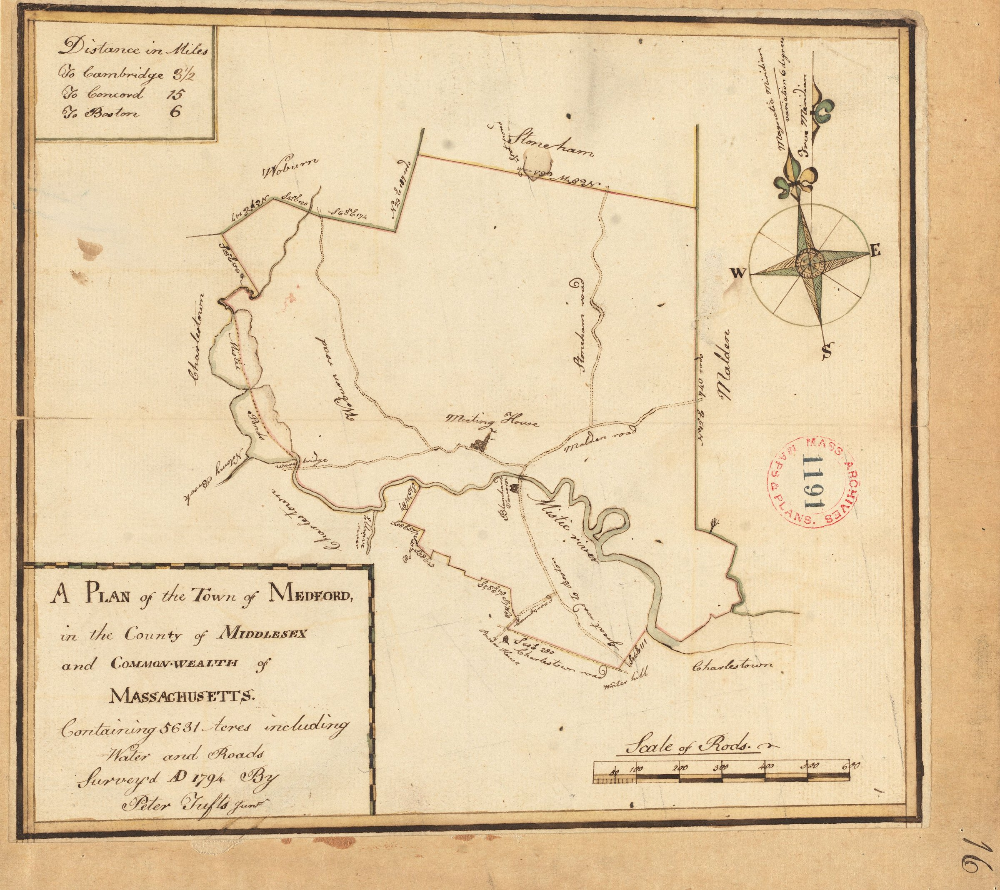
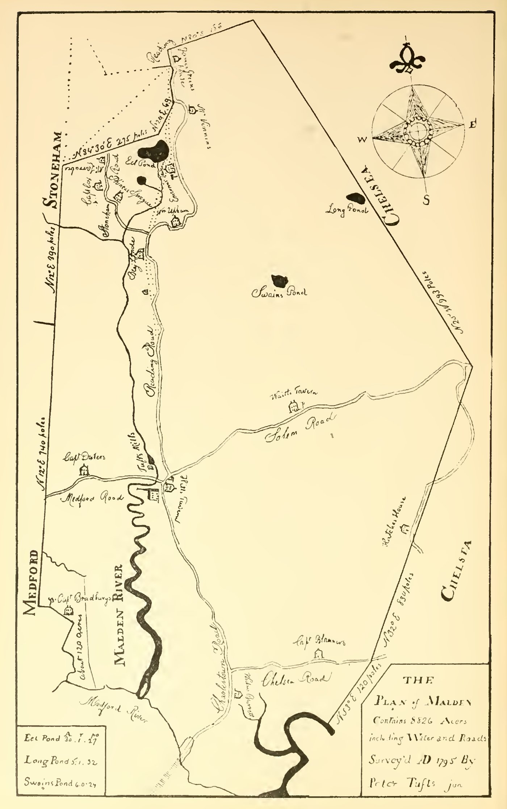
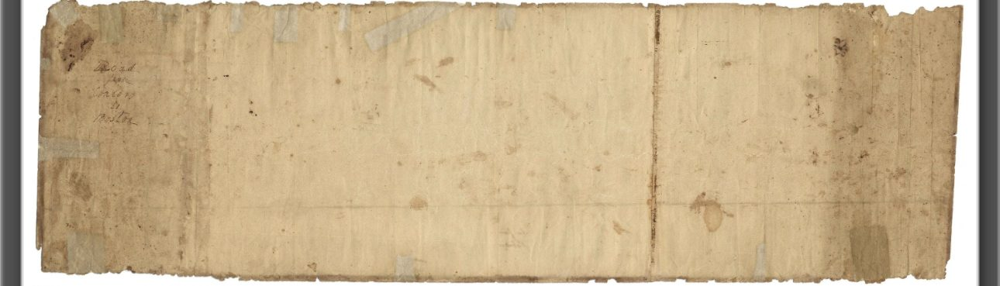
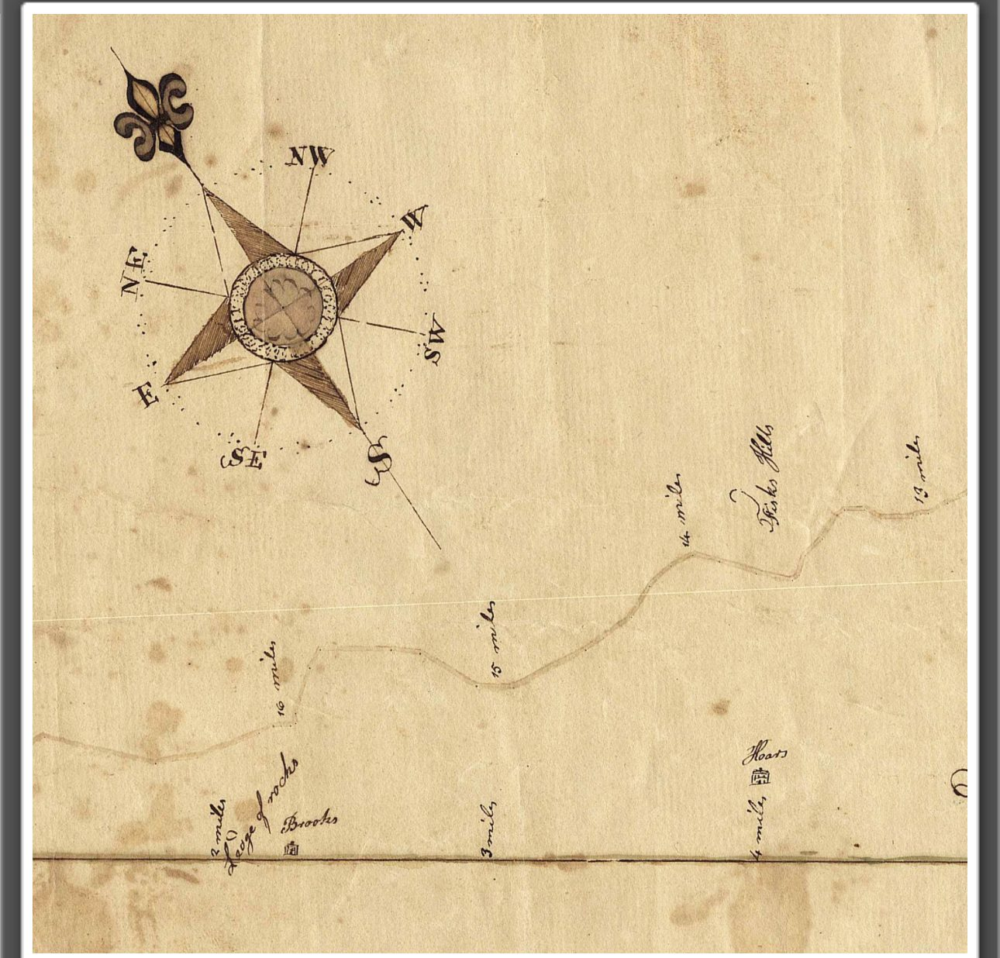
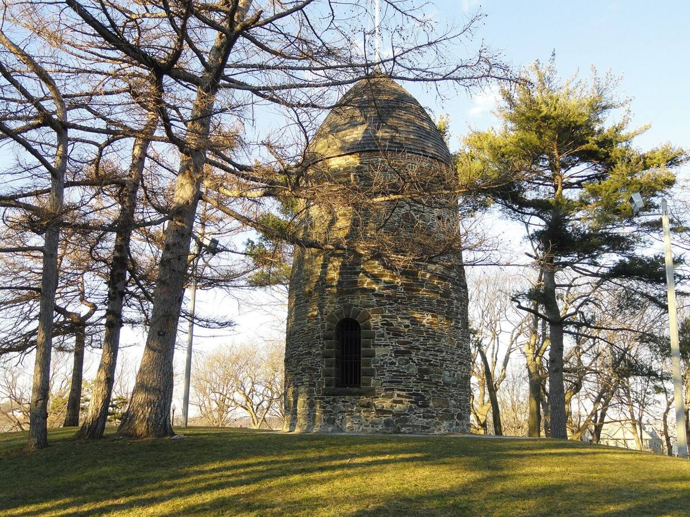

Biography

Among the many Peters of the Winter Hill family, this one was known as “Peter, the surveyor.” A son of Peter Tufts Jr. (1753–1832) and Hannah Adams, and a grandson of Anne Adams Tufts
and Hannah Adams, and a grandson of Anne Adams Tufts , he was born in 1774, probably on the Royal farm in Medford where his father had settled and where, Booth says, all his father’s children were born.
, he was born in 1774, probably on the Royal farm in Medford where his father had settled and where, Booth says, all his father’s children were born.
“Peter Tufts, Jr., lived a life of great activity. He was keeper of the Powder House, and when in 1815 the powder was transferred to the new storehouse at the end of Magazine street, Cambridgeport, he continued as keeper, took up his residence near the magazine and died there in 1825. Mr. Tufts was a civil engineer by profession, and among the many Peters is designated as ‘Peter, the surveyor.’ He drew a plan of Charlestown in 1818, and the mass of plans that he left behind him shows how laboriously he was engaged in the surveys of public and private property.”
Edward C. Booth, “The Tufts Family in Somerville,” Historic Leaves (Somerville Historical Society), vol. 1 (1902–03), p. 22–23. Text (Perseus)
“In public life he was prominent, having been trustee of schools, selectman for most of the years between 1806 and 1817, assessor for several terms and representative to the General Court for six terms, between the years 1809 and 1819.”
Edward C. Booth, “The Tufts Family in Somerville,” Historic Leaves (Somerville Historical Society), vol. 1 (1902–03), p. 23. Text (Perseus)
His surveys
At twenty-three he drew a manuscript road survey, signed “By Peter Tufts junior June 14th 1797,” of the roughly eighteen-mile road from Concord meeting house through Lexington and Menotomy to Cambridge and the new West Boston Bridge, the route the British marched on April 19, 1775. It is drawn in ink and watercolor at half a mile to the inch, with a compass rose (on which, the dealer notes, East and West are reversed) and the older road via Waltham copied “from a old Plan Drawn by Mr Osburn.” The dealer reports that library catalogs list some twenty-one manuscript maps and plans by Tufts dated 1793 to 1823 (“18th-century Peter Tufts, Jr. survey of a road from Concord to Cambridge, Mass.,” Boston Rare Maps, inventory BRM3348. Dealer description). The sheet has since been sold; the dealer’s photographs are shown below.
His best-known work is the engraved Plan of Charlestown Peninsula (1818), “from accurate survey by Peter Tufts Junr. Esqr.” A 1794 manuscript plan of Medford signed “Peter Tufts junr” may be his or his father’s. Both are shown on Places: Maps.
His Plans of Malden (1795) and West Cambridge (1803)
In 1794 the General Court ordered every town to have an accurate plan of its bounds taken. Malden’s was surveyed in 1795 by “Peter Tufts, Jr., of Medford.” The Melrose historian Elbridge Goss used it to show which roads then existed in North Malden, now Melrose:
“On a plan of Malden, surveyed by Peter Tufts, Jr., of Medford, in 1795, by authority of a resolve passed by the General Court in 1794, the only roads laid down in what was then North Malden, are, the main road as last described, called the “Reading Road,” now Main Street, and the “Stoneham Road””
Elbridge Henry Goss, The History of Melrose, County of Middlesex, Massachusetts (1902), p. 47. Internet Archive (Transcribed from the printed page.)

Eight years later a “plan by Peter Tufts, Jr., dated 1803” recorded mill land along the brook in West Cambridge, now Arlington (Benjamin and William R. Cutter, History of the Town of Arlington, Massachusetts (1880), p. 17. Internet Archive). The Arlington register, describing his marriage to Martha Locke, adds a one-line judgment of his work:
““Peter Tufts, Jr., Esq.,” was an eminent surveyor.”
Benjamin and William R. Cutter, History of the Town of Arlington, Massachusetts (1880), p. 311. Internet Archive
⚑ Unverified
Which Peter Tufts Jr. drew the 1795 plan. In 1803 “Peter Tufts, Jr.” can only be the surveyor (1774–1825), and the Arlington register calls him “Peter, Jr., of Medford (s. of Peter, 3d).” By 1795 his father had already become plain “Peter” on the death of the elder Peter of Winter Hill in 1791, so the 1795 plan is probably also the surveyor’s work, but no source seen states it outright. Note: Pending further work.
in 1791, so the 1795 plan is probably also the surveyor’s work, but no source seen states it outright. Note: Pending further work.
The Road from Concord to Cambridge, 1797


The survey follows the road the British marched on April 19, 1775, from Concord meeting house through Lexington and Menotomy to Cambridge and the West Boston Bridge, with distances marked each mile. Beneath it is “The Old Road taken from a old Plan Drawn by Mr Osburn,” by way of Waltham (Boston Rare Maps, BRM3348). A later plan of the same road by Peter Tufts, dated December 4, 1801, is in the Lincoln Town Archives (Lincoln Town Archives).
Service Record
Town: Medford, Charlestown (Somerville) and Cambridgeport, Mass. · Dates: 1774–1825

Civil: selectman (most years 1806–1817), assessor, school trustee, and representative to the General Court for six terms between 1809 and 1819; keeper of the Powder House and, from 1815, of the Cambridgeport magazine (Booth, p. 23). Too young for Revolutionary service.
Family Connection
Father: Peter Tufts Jr. (1753–1832) . Mother: Hannah Adams, niece of Anne Adams (Booth, p. 22). Grandparents: Peter Tufts of Winter Hill
. Mother: Hannah Adams, niece of Anne Adams (Booth, p. 22). Grandparents: Peter Tufts of Winter Hill and Anne Adams Tufts
and Anne Adams Tufts . He had twelve children (Booth, p. 23).
. He had twelve children (Booth, p. 23).
Relatives with profiles on this site: father Peter Tufts Jr. ; grandmother Anne Adams Tufts
; grandmother Anne Adams Tufts ; great-uncle John Tufts
; great-uncle John Tufts ; great-great-grandfather Peter Tufts (1697–1776); uncle Thomas Tufts of Lexington; aunt Rebecca Tufts Adams; aunt Sarah Tufts Adams.
; great-great-grandfather Peter Tufts (1697–1776); uncle Thomas Tufts of Lexington; aunt Rebecca Tufts Adams; aunt Sarah Tufts Adams.
Spouse(s)
- Martha Locke, daughter of Lieut. Samuel and Margaret (Adams) Locke of West Cambridge.
- Anne Benjamin (Cutter), daughter of Deacon Ephraim Cutter (Booth, pp. 22–23). Marriage dates: Note: Pending further work.
Authoritative IDs / Index Numbers
| Source | ID / status |
|---|---|
| Perseus person index (auth=) | auth=tufts,peter. This is a name-level key shared by every Peter Tufts in Perseus, not a personal ID. Use it with the passages cited on this page. |
| Find a Grave memorial | Note: Pending further work. |
| Brooks, History of Medford (1855) register no. | Note: Pending further work. |
| Mass. Soldiers and Sailors | Not yet checked for this page |
| DAR ancestor no. | Note: Pending further work. |
| FamilySearch ID | Note: Pending further work. |
| Geni profile | Note: Pending further work. |
| WikiTree ID | Note: Pending further work. |
| Town / vital records | Medford VRs not yet checked by volume and page |
Only IDs confirmed against dates and family are given as matches. “Not yet checked” means the source has not been searched; “Checked, not found” means it was searched without a match.
⚑ Unverified
Exact birth and death dates have not been found; Booth gives only the years 1774 and 1825. The 1794 Medford plan: father or son (see Places: Maps). The 1797 survey’s purpose is unknown; the dealer suggests the West Boston Bridge proprietors may have commissioned it, which is conjecture.
Links and Resources
Every source, record, map, survey, marker and artifact tied to this person, gathered in one place. Page numbers are given where a book is cited.
Maps, Surveys and Artifacts
- Road from Concord to Cambridge, survey by Peter Tufts junior (1797) — This site’s entry for his manuscript survey of the April 19, 1775 road, signed June 14, 1797.
- Plan of Charlestown Peninsula (1818) — His engraved plan “from accurate survey by Peter Tufts Junr. Esqr.”, shown on Places: Maps, with the 1794 Medford plan that may be his or his father’s.
- Boston Rare Maps, inventory BRM3348 — Dealer description and images of the 1797 survey (privately held; linked, not reproduced).
- — Plan of Malden, surveyed by Peter Tufts Jr., 1795. “The Plan of Malden, Contains 8826 Acres including Water and Roads, Survey’d AD 1795 By Peter Tufts jun.” Reproduced, reduced, in Goss’s History of M
- — Peter Tufts Jr.’s road survey, Concord to Cambridge, 1797. The whole sheet: “This Plan Laid down by a Scale of Half-Mile per inch By Peter Tufts junior June 14th 1797,” ink and watercolor on two joine
- — Detail: the compass rose and the road through Concord. Detail of the 1797 survey, with its ink-and-watercolor compass rose. The dealer notes that East and West are reversed on it. Image: Boston Rare M


Markers, Plaques and Places
- The Powder House, Somerville — He was keeper of the Powder House until 1815 (Booth, p. 22).
Digitized Books and Journals
- Edward C. Booth, “The Tufts Family in Somerville,” Historic Leaves (Somerville Historical Society), vol. 1 (1902–03), p. 22–23. · Text (Perseus)
- Elbridge Henry Goss, The History of Melrose, County of Middlesex, Massachusetts (1902), p. 47. · Internet Archive
- Eight years later a “plan by Peter Tufts, Jr., dated 1803” recorded mill land along the brook in West Cambridge, now Arlington (Benjamin and William R. Cutter, History of the Town of Arlington, Massachusetts (1880), p. 17. · Internet Archive
Archives, Letters and Records
- Lincoln Town Archives — …mile. Beneath it is “The Old Road taken from a old Plan Drawn by Mr Osburn,” by way of Waltham (Boston Rare Maps, BRM3348). A later plan of the same road by Peter Tufts, dated December 4, 1801, is in the Lincoln Town Archives
Related Pages on This Site
- Peter Tufts of Winter Hill
 — Father: Peter Tufts Jr. (1753–1832). Mother: Hannah Adams, niece of Anne Adams (Booth, p. 22). Grandparents
— Father: Peter Tufts Jr. (1753–1832). Mother: Hannah Adams, niece of Anne Adams (Booth, p. 22). Grandparents